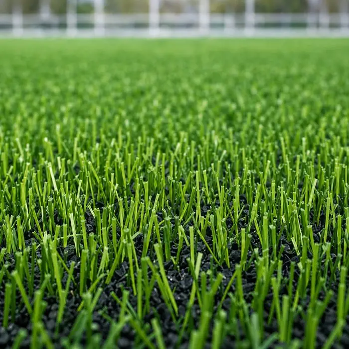
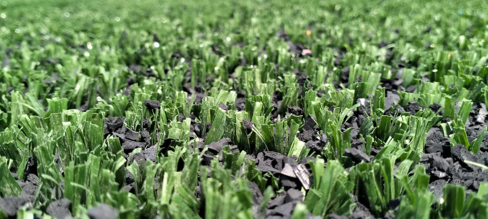
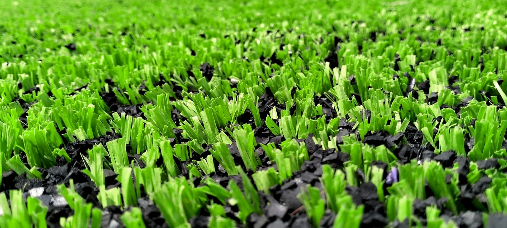
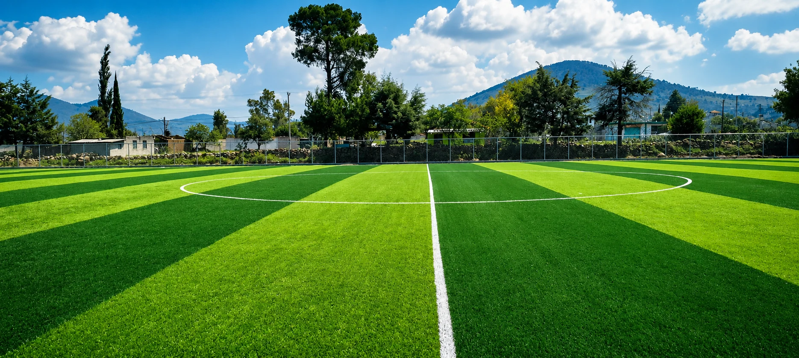
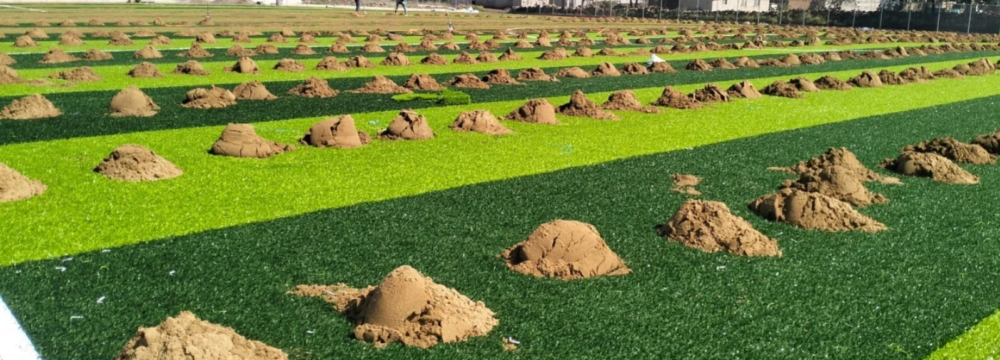
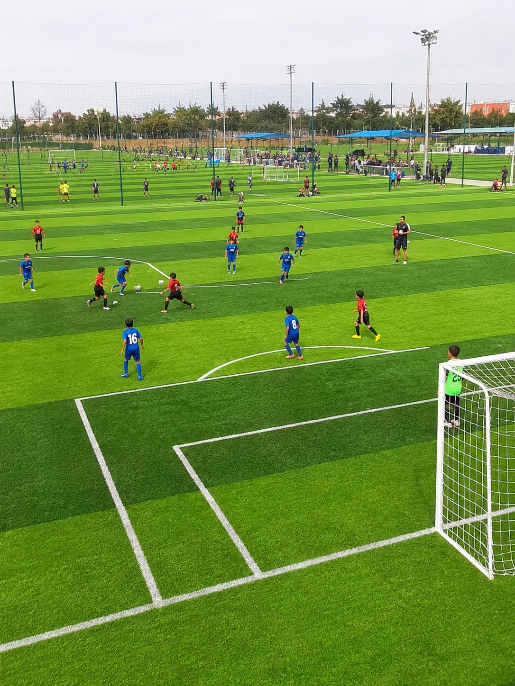
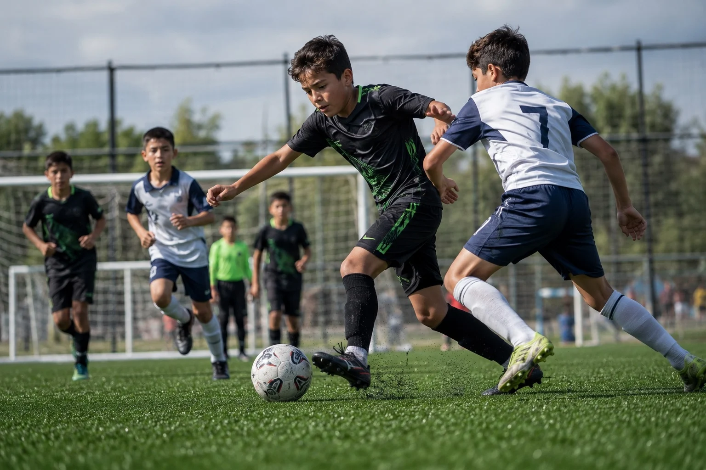
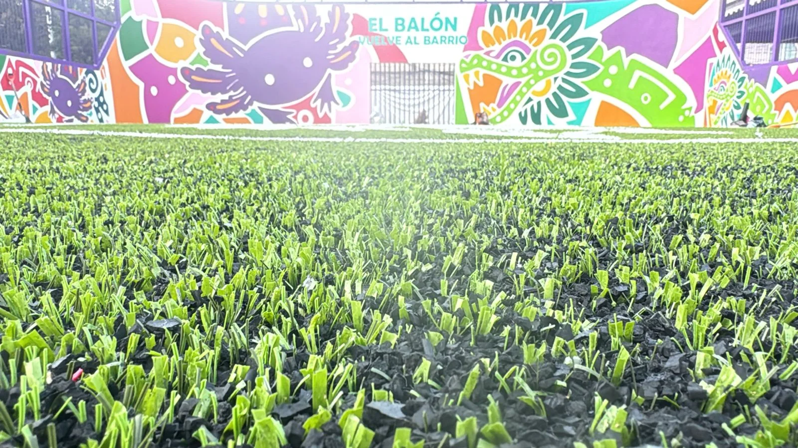

Apariencia profesional
Monofilamento
Mejor recuperación de fibra y presentación premium para futbol 7, soccer, clubes y canchas con alto estándar visual.
Pasto sintético fibrilado de alta resistencia para canchas de renta, entrenamientos, colegios y proyectos de uso intensivo. Instalación profesional y acabado deportivo listo para jugar.


Combinamos tono claro y tono oscuro para lograr un franjeado europeo con presencia de estadio profesional. Tu cancha se ve mejor, se percibe más cuidada y queda lista para renta, entrenamientos o torneos.
Utilizamos pasto sintético fibrilado importado en dos tonos para crear franjas limpias, profundas y visibles desde cualquier punto de la cancha. El resultado no solo se ve mejor: eleva la percepción del proyecto, ayuda a vender mejor la renta de la cancha y hace que el complejo se sienta profesional desde el primer vistazo.

El pasto fibrilado es una fibra altamente resistente al desgaste. Se recomienda para canchas que se rentan, entrenamientos, colegios, academias y proyectos de uso intensivo. Es el pasto más resistente por excelencia cuando la cancha necesita operar todos los días y seguir viéndose profesional.
No todos los proyectos necesitan el mismo pasto sintético. Esta comparación ayuda a elegir sin perder el objetivo: una cancha durable, jugable y lista para operar.

Mejor recuperación de fibra y presentación premium para futbol 7, soccer, clubes y canchas con alto estándar visual.
Fibrilado en 2 tonos para franjeado europeo, ideal para canchas de renta, entrenamientos y colegios que necesitan máxima resistencia al desgaste.

Combina resistencia y apariencia para colegios, municipios, clubes y proyectos de uso diario.
Cotizamos material, instalación o sistema completo según tu cancha. El alcance se define por medidas, deporte y uso esperado.
Las fotos permiten comparar textura, color, líneas, proporción y acabado real antes de pedir una cotización.


Recomendamos pasto fibrilado cuando la cancha necesita aguantar renta, clases, ligas y entrenamiento continuo sin perder presencia.

Funciona muy bien en canchas chicas, espacios compactos y proyectos con alta rotación de jugadores.

Resiste canchas que se rentan constantemente, torneos, academias y complejos deportivos con uso continuo.

Buen desempeño en rebotes, cambios de dirección y superficies de contacto constante durante el juego.

Cuando el objetivo es durabilidad y resistencia, el fibrilado es una de las opciones más solicitadas para obras públicas, municipios y espacios deportivos de uso constante.
Envíanos medidas, ciudad, tipo de cancha y fotos del área. Te respondemos por WhatsApp con recomendación y cotización personalizada.
El pasto sintético fibrilado se recomienda para futbol 5, futbol rápido, escuelas y canchas de uso constante porque ofrece alta resistencia al desgaste.
Puede incluir suministro de pasto sintético, instalación profesional, líneas de juego, arena sílica, caucho sintético, adhesivos, uniones, trazo deportivo, cepillado final y garantía según alcance contratado.
Depende del uso. Monofilamento conviene por apariencia y recuperación, fibrilado por resistencia en alto tráfico e híbrido por equilibrio entre durabilidad y presentación.
Para futbol 7 suele recomendarse pasto monofilamento o híbrido de 40 a 45 mm, según intensidad de uso, tipo de calzado, apariencia deseada y presupuesto.
Para futbol rápido y futbol 5 suele evaluarse pasto fibrilado o híbrido por su resistencia al uso constante y buen desempeño en espacios de alta rotación.
Sí. Puedes cotizar suministro de pasto sintético deportivo o suministro con instalación profesional, según el proyecto y las condiciones del área.
Sí. Sportmaster suministra e instala pasto sintético deportivo para canchas de futbol 5, futbol 7, futbol rápido, soccer, escuelas, clubes y municipios en todo México.
Necesitamos medidas aproximadas, ciudad, tipo de cancha, uso esperado, fotos del área y si buscas solo material o instalación completa lista para jugar.
+3,500 canchas instaladas en todo México. Cada proyecto cuenta una historia real de confianza.
Además del pasto sintético, podemos integrar los accesorios deportivos para entregar un proyecto más completo y profesional.

Estructura metálica con diseño profesional para espectadores, escuelas y clubes.

Bancas techadas para equipo local, visitante y árbitros.

Porterías y redes para futbol 5, futbol 7, rápido y soccer.

Contención perimetral para seguridad, operación y control del balón.

Reflectores, postes y orientación para extender horarios de juego.